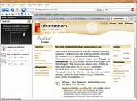
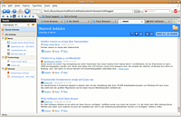
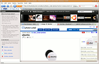

Flock
Archivierte Anleitung
Dieser Artikel wurde archiviert, da er - oder Teile daraus - nur noch unter einer älteren Ubuntu-Version nutzbar ist. Diese Anleitung wird vom Wiki-Team weder auf Richtigkeit überprüft noch anderweitig gepflegt. Zusätzlich wurde der Artikel für weitere Änderungen gesperrt.
Zum Verständnis dieses Artikels sind folgende Seiten hilfreich:
Flock 
 ist ein freier Webbrowser, der auf Mozilla Firefox basiert. Es handelt sich hierbei um einen "sozialen Browser", das heißt, dieser ermöglicht besseren Zugriff auf soziale Software wie Online-Communities (Facebook, Flickr, Twitter, YouTube), Mediendienste (Photobucket, Truveo), Blogs und Webseiten (Piczo) und Social Bookmarking (del.icio.us, Ma.gnolia). So kann man nicht nur besser durch die Angebote navigieren, sondern beispielsweise auch Informationen für einen Blog-Eintrag im "Web Clipboard" zusammenstellen, einer Sidebar, in die man Texte, Bilder und Links ziehen, ansammeln und auch gleich veröffentlichen kann. Man kann aber auch auf viele Erweiterungen zurückgreifen, wie man es vom Firefox her kennt.
ist ein freier Webbrowser, der auf Mozilla Firefox basiert. Es handelt sich hierbei um einen "sozialen Browser", das heißt, dieser ermöglicht besseren Zugriff auf soziale Software wie Online-Communities (Facebook, Flickr, Twitter, YouTube), Mediendienste (Photobucket, Truveo), Blogs und Webseiten (Piczo) und Social Bookmarking (del.icio.us, Ma.gnolia). So kann man nicht nur besser durch die Angebote navigieren, sondern beispielsweise auch Informationen für einen Blog-Eintrag im "Web Clipboard" zusammenstellen, einer Sidebar, in die man Texte, Bilder und Links ziehen, ansammeln und auch gleich veröffentlichen kann. Man kann aber auch auf viele Erweiterungen zurückgreifen, wie man es vom Firefox her kennt.
| Screenshots | ||
|  |  |  |
| geöffnetes "Web Clipboard" | Feed-Ansicht des Browsers | "Media Bar" und "People Sidebar" |
Installation¶
Hinweis:
Momentan sind nur ältere Versionen komplett in Deutsch verfügbar. Man sollte aber immer die aktuellste Version verwenden, da diese auch die sicherste ist. Diese kann man auch zumindest teilweise auf Deutsch umstellen.
Aus GetDeb-Quellen¶
Eine aktuellere Version gibt es aus den GetDeb-Quellen, aber nur für Karmic. Dafür muss die entsprechende Quelle freigeschaltet sein. Dann muss das folgende Paket installiert werden [1]:
flock
 mit apturl
mit apturl
Paketliste zum Kopieren:
sudo apt-get install flock
sudo aptitude install flock
Starten ohne Installation¶
Um Flock direkt nach dem Herunterladen des Archivs aus diesem heraus starten zu können geht man folgendermaßen vor:
Aktuellste Version des Programms für Linux von der Webseite
als Archiv herunterladen und entpacken [3]. Anschließend startet [2] man die sich im Ordner befindliche Datei flock.
Man kann auch den vorkompilierten Programmordner mit Root-Rechten [7] nach /opt/flock verschieben, um es allen Benutzern zugänglich zu machen und einen Menüeintrag anlegen [4].
Zur Deinstallation müssen lediglich dieser Ordner sowie der Benutzerordner ~/.flock gelöscht werden.
Quellcode kompilieren¶
Desweiteren besteht die Möglichkeit, den Quellcode des Programmes aus dem Entwicklerbereich herunterzuladen, zu entpacken [3] und zu kompilieren [5]. Dabei sollte es mit folgendem Befehl im Terminal [6] möglich sein, alle notwendigen Abhängigkeiten zu installieren:
apt-get build-dep firefox
Benutzung/Konfiguration¶
Nun findet man einen Eintrag im GNOME-Menü unter "Internet -> Flock". Alternativ kann man das Programm mit dem Befehl flock-browser starten [2].
Beim ersten Start von Flock erscheint ein Dialog, der es ermöglicht, seine persönlichen Einstellungen aus Firefox in Flock zu importieren. Anschließend kann man wie gewohnt surfen und Erweiterungen installieren. Außerdem kann man seine Community-Accounts einrichten und seine persönliche Startseite gestalten. Mehr Informationen über die grundlegenden Firefox-Funktionen findet man im Artikel Firefox. Mehr Informationen zu den speziellen Funktionen von Flock findet man im Support-Bereich des Herstellers.
Problembehebung¶
Firefox-Erweiterungen lauffähig machen¶
Laut dem Entwickler sollten alle Erweiterungen für Firefox 1.5 mit Flock 0.7.x laufen und alle Erweiterungen für Firefox 2 ab Flock 0.8. Dennoch weigert sich Flock Erweiterungen zu installieren, die nicht explizit vom Programmierer als für Flock kompatibel gekennzeichnet sind. Möchte man diese trotzdem installieren, muss man die Markierung manuell vornehmen. Dazu geht man folgendermaßen vor:
Zuerst muss die gewünschte Erweiterung mit Hilfe von "Rechtsklick -> Ziel speichern unter ..." als xpi-Datei heruntergeladen werden.
Anschließend muss die Datei, die eigentlich ein ZIP-Archiv ist, entpackt [3] werden.
Nun öffnet man die im entpackten Ordner enthaltene Datei install.rdf im Texteditor [8] und fügt unter die letzte Zeile mit
</em:targetApplication>folgenden Code ein:<!-- Flock --> <em:targetApplication> <Description> <em:id>{a463f10c-3994-11da-9945-000d60ca027b}</em:id> <em:minVersion>0.7</em:minVersion> <em:maxVersion>2.0</em:maxVersion> <!-- Unterstützung bis Version 2.0 --> </Description> </em:targetApplication>Sollte eine solche Zeile nicht existieren, sucht man stattdessen nach
</targetApplication>und fügt danach folgenden Code ein:<!-- Flock --> <targetApplication> <RDF:Description> <id>{a463f10c-3994-11da-9945-000d60ca027b}</id> <minVersion>0.7</minVersion> <maxVersion>2.0</maxVersion> <!-- Unterstützung bis Version 2.0 --> </RDF:Description> </targetApplication>Danach speichert man die Datei ab und erstellt [3] aus dem Inhalt des entpackten Ordners wieder ein ZIP-Archiv und benennt dieses in den selben Dateinamen wie die ursprünglich heruntergeladene Datei um.
Zum Schluss kann man die Datei in Flock öffnen und sie sollte automatisch als Erweiterung erkannt und installiert werden.
Skript¶
Vor allem wenn man mehrere Dateien für Flock lauffähig machen möchte, empfiehlt sich der Einsatz eines Skriptes. Das Skript xpi4flock.sh  von e2b entpackt alle im selben Ordner befindlichen xpi-Dateien und überprüft, ob schon Einträge für Flock vorgenommen wurden. Falls nicht werden diese hinzugefügt. Anschließend werden die Dateien wieder zu xpi-Dateien gepackt, welche die ursprünglichen Erweiterungsdateien ersetzen. Nun können diese in Flock installiert werden.
von e2b entpackt alle im selben Ordner befindlichen xpi-Dateien und überprüft, ob schon Einträge für Flock vorgenommen wurden. Falls nicht werden diese hinzugefügt. Anschließend werden die Dateien wieder zu xpi-Dateien gepackt, welche die ursprünglichen Erweiterungsdateien ersetzen. Nun können diese in Flock installiert werden.
Zum Verwenden muss das Skript lediglich heruntergeladen werden. Anschließend muss man es ausführbar [7] machen und kann es starten [2]. Nutzt man es im Terminal [6], werden außerdem zu einer Problemlösung nützliche Hinweise ausgegeben.
Flash¶
Wenn Flash zwar installiert ist aber in Flock nicht funktioniert, muss man mit
sudo ln -s /usr/lib/firefox/plugins/* /opt/flock/plugins
das Flashskript in den Plugin-Ordner von Flock kopieren.
Flock zumindest teilweise auf Deutsch umstellen¶
Auf diesem Wege kann auch z.B. ein deutsches Sprachpaket des Firefox installiert werden, sofern offiziell keine deutschsprachige Version bereit steht. Diese Sprachdatei findet man z.B. für den aktuellsten Firefox 2 hier . Alternativ kann man auch die Sprachdatei aus der letzten deutschsprachigen Flock-Version nehmen. Dazu lädt man diese herunter und kopiert aus dem entpackten [3] Ordner die Dateien chrome/de.jar und chrome/de.manifest in das Installationsverzeichnis (nach /usr/share/flock/chrome) der vorhandenen Version. Anschließend muss nur noch der erweiterte Konfigurationseditor des Flock durch die Eingabe von about:config in die Adressleiste geöffnet werden. Dort sucht man nach dem Attribut "general.useragent.locale" und ändert dessen Wert zu "de". Nach einem Neustart des Browsers sollte die Oberfläche in Deutsch erscheinen. Leider wird beim Weg über das Firefox-Sprachpaket auch der Titel des Browsers zu Mozilla Firefox geändert.
- Erstellt mit Inyoka
-
 2004 – 2017 ubuntuusers.de • Einige Rechte vorbehalten
2004 – 2017 ubuntuusers.de • Einige Rechte vorbehalten
Lizenz • Kontakt • Datenschutz • Impressum • Serverstatus -
Serverhousing gespendet von